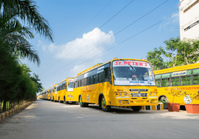
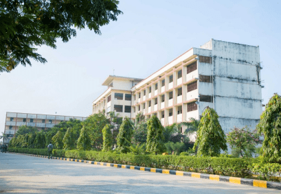
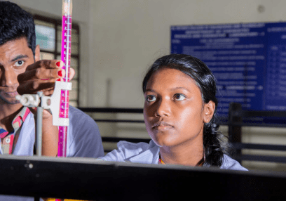

AboutSt. Peter's College
St.Peters College of Engineering and Technology, a co-educational college was established by Lakshmi Saraswathi Educational Trust in the year 2008. The college aims to impart training to students to develop their Intellectual powers, identify and cultivate interest andtalents, and train them to become responsible and eminent citizens of india. The institution is spread over a sprawling campus with its calm surrounding, creating a study atmosphere. The invigorative and serene milieu of the institution is conducive for higher education.
14+ years of Experience
10,000+ Happy Students
VISION
To emerge as an institution of excellence by providing high quality education in Engineering, Technology and Management to contribute for the economic as well as societal growth of our nation.
MISSION
- To impart strong fundamental and value-based academic knowledge in various Engineering, Technology and Management disciplines to nurture creativity.
- To promote innovative Research and Development activities collaborating with Industries, R & D organisations and other statutory bodies.
- To provide a conducive learning environment and training so as to empower the students with dynamic skill development for employability.
- To foster entrepreneurial spirit amongst the students for making a positive impact on remarkable community development.
What do you want to Study

Engineering & Technology

Management Studies
Why Students Love St.Peter's
General Facility
emerge as an institution of excellence by providing high quality education in Engineering,

Campus
To emerge as an institution of excellence by providing high quality education in Engineering,

Research
To emerge as an institution of excellence by providing high quality education in Engineering,